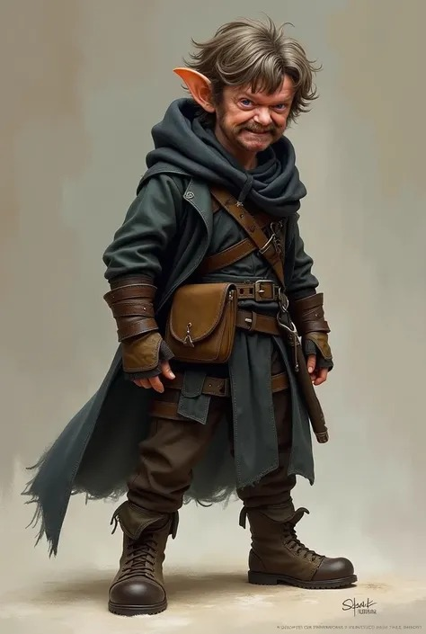

Shoko, o Ladrão
Informações básicas
Nome do personagem: Shoko, o Ladrão
Classe: Ladrão
Raça: Halfling
Status
Vida: 40/40
Fôlego: 12/12
Inventário
Besouro morto
Pata de coelho
Punhado de lama
Ouro: 12
Habilidades
Imitar Sombra (Habilidade Ativa)
Com um salto preciso e silencioso, o halfling se move como se o próprio chão o rejeitasse. Ele se posiciona exatamente atrás de seu inimigo, ajustando os passos e a postura para se tornar sua sombra viva. Enquanto a ilusão durar, nenhum golpe físico parece alcançá-lo — como se o inimigo estivesse atacando a si mesmo.
Efeito: O ladrão se torna intocável por ataques corpo a corpo e projéteis durante 1 turno. Ainda pode sofrer dano de explosões, gases ou ataques mágicos em área.
Custo de Fôlego: 4 + 1d4 pontos.
Mãos Mais Rápidas que Palavras (Habilidade Ativa)
Enquanto o caos reina no campo de batalha, o halfling surge entre os passos dos outros como um rato elegante, mas mortal. Em um piscar de olhos, ele toma da mão do inimigo o que não lhe pertence — e faz algo criativo com isso.
Efeito: O ladrão tenta roubar um item empunhado (arma, poção, grimório etc.) de um inimigo ou aliado em alcance corpo a corpo. Role teste de agilidade (1d20) (Ação de roubar) + furtividade(1d8) (Ação de permanecer furtivo após o roubo). Em caso de sucesso, o item pode ser utilizado, jogado longe ou destruído com um movimento rápido. Armas maiores impõem penalidades.
Custo de Fôlego: 6 + 1d4 pontos.
Última Sombra Antes da Explosão (Habilidade Ativa)
Quando tudo parece perdido, o halfling sorri, se abaixa num pulo e some da vista. O mundo ao redor explode — mas ele já não está mais lá. A fumaça se dissipa, e a única coisa deixada para trás é a surpresa.
Efeito: Use esta habilidade imediatamente após sofrer dano de uma área (explosão, feitiço, colapso). O ladrão anula completamente o dano de área e pode se reposicionar até 4 metros de distância. Só pode ser usada 1 vez por combate.
Custo de Fôlego: 5 + 1d4 pontos.
Fôlego (Energia): O ladrão possui 12 pontos de Fôlego. Usar habilidades especiais consome entre 4 e 10. Ele recupera 2 por turno ao evitar ações intensas, ou todo o Fôlego com 5 minutos de descanso. Sucessos críticos em testes de Furtividade ou Acrobacia recuperam +3 Falhas críticas causarão penalidades.